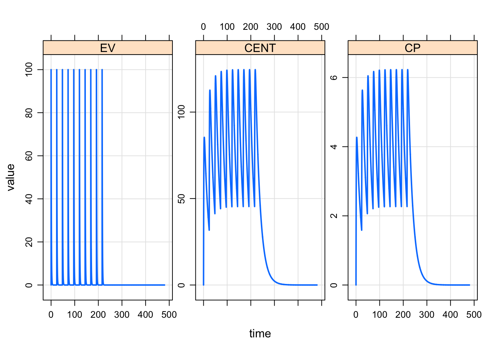

This vignette shows the user how to do their first simulation with mrgsolve.
After loading the package
library(mrgsolve)we’ll use the mread() function to read, parse, compile and load a model out of the internal model libary. Try calling the modlib function (modlib()) and see that the path to the installed package is returned, pointing to a directory of pre-coded models. These models are good to try when learning mrgsolve.
For this first example, we’re using a one compartment model (called pk1 in the model library)
mod <- mread_cache("pk1", modlib())Once we create the model object (mod) we can extract certain information about the model. For example, get an overview
mod.
.
. ------------ mrgsolve model object (unix) ------------
. project: /Users/kyleb/Rli...gsolve/models
. source: pk1.cpp
. shared object: pk1-so-16ad53b12cb5e
.
. time: start: 0 end: 24 delta: 1
. add: <none>
. tscale: 1
.
. compartments: EV CENT [2]
. parameters: CL V KA [3]
. omega: 0x0
. sigma: 0x0
.
. solver: atol: 1e-08 rtol: 1e-08
. maxsteps: 5000 hmin: 0 hmax: 0Or look at model parameters and their values
param(mod).
. Model parameters (N=3):
. name value . name value
. CL 1 | V 20
. KA 1 | . .We’ll see in the section below how to run a simulation from this model. But first, let’s create a dosing intervention to use with this model.
The simplest way to create an intervention is to use an event object. This is just a simple expression of one or more model interventions (most frequently doses)
evnt <- ev(amt = 100, ii = 24, addl = 9)evnt. Events:
. time cmt amt evid ii addl
. 1 0 1 100 1 24 9We’ll see in other vignettes how to create more-complicated events as well as how to create larger data sets with many individuals in them.
For now, the event object is just an intervention that we can combine with a model.
To simulate, use the mrgsim() function.
out <- mod %>% ev(evnt) %>% mrgsim(end = 480, delta = 0.1)We use a pipe sequence here (%>%) to pass the model object (mod) into the event function (ev()) where we attach the dosing intervention, and that result gets passed into the simulation function. The result of the simulation function is essentially a data frame of simulated values
out. Model: pk1
. Dim: 4802 x 5
. Time: 0 to 480
. ID: 1
. ID time EV CENT CP
. [1,] 1 0.0 0.00 0.000 0.0000
. [2,] 1 0.0 100.00 0.000 0.0000
. [3,] 1 0.1 90.48 9.492 0.4746
. [4,] 1 0.2 81.87 18.034 0.9017
. [5,] 1 0.3 74.08 25.715 1.2858
. [6,] 1 0.4 67.03 32.619 1.6309
. [7,] 1 0.5 60.65 38.819 1.9409
. [8,] 1 0.6 54.88 44.383 2.2191mrgsolve comes with several different functions for processing output. One simple function is a plot method that will generate a plot of what was just simulated
plot(out)
mrgsolve: mrgsolve.github.io | Metrum Research Group: metrumrg.com